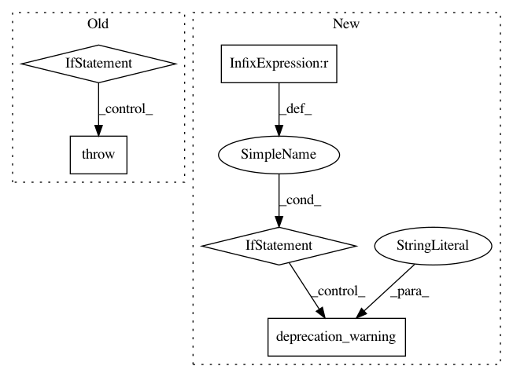

22ccc43670dac93eb7fe81520a84cf3979d05693,rllib/agents/dqn/dqn.py,,validate_config_and_setup_param_noise,#Any#,152
Before Change
Rewrites rollout_fragment_length to take into account n_step truncation.
// PyTorch check.
if config["use_pytorch"]:
raise ValueError("DQN does not support PyTorch yet! Use tf instead.")
// TODO(sven): Remove at some point.
// Backward compatibility of epsilon-exploration config AND beta-annealing
// fraction settings (both based on schedule_max_timesteps, which is
// deprecated).
schedule_max_timesteps = None
if config.get("schedule_max_timesteps", DEPRECATED_VALUE) != \
DEPRECATED_VALUE:
deprecation_warning(
After Change
// Backward compatibility of epsilon-exploration config AND beta-annealing
// fraction settings (both based on schedule_max_timesteps, which is
// deprecated).
if config.get("grad_norm_clipping", DEPRECATED_VALUE) != DEPRECATED_VALUE:
deprecation_warning("grad_norm_clipping", "grad_clip")
config["grad_clip"] = config.pop("grad_norm_clipping")
schedule_max_timesteps = None
if config.get("schedule_max_timesteps", DEPRECATED_VALUE) != \
DEPRECATED_VALUE:
deprecation_warning(
In pattern: SUPERPATTERN
Frequency: 3
Non-data size: 5
Instances
Project Name: ray-project/ray
Commit Name: 22ccc43670dac93eb7fe81520a84cf3979d05693
Time: 2020-04-06
Author: sven@anyscale.io
File Name: rllib/agents/dqn/dqn.py
Class Name:
Method Name: validate_config_and_setup_param_noise
Project Name: deepmind/sonnet
Commit Name: 4e6f863acd500dc02e7c2a8e5a01566ac58930d9
Time: 2018-11-20
Author: noreply@google.com
File Name: sonnet/python/modules/conv.py
Class Name: CausalConv1D
Method Name: __init__
Project Name: ray-project/ray
Commit Name: 5537fe13b097097668f9c08a00051e8b7a2d1980
Time: 2020-04-03
Author: sven@anyscale.io
File Name: rllib/agents/dqn/dqn.py
Class Name:
Method Name: validate_config_and_setup_param_noise